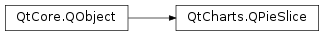

QtCharts.QPieSlice¶
Note
This class was introduced in Qt 5.7.
Synopsis¶
Functions¶
- def
angleSpan() - def
borderColor() - def
borderWidth() - def
brush() - def
color() - def
explodeDistanceFactor() - def
isExploded() - def
isLabelVisible() - def
label() - def
labelArmLengthFactor() - def
labelBrush() - def
labelColor() - def
labelFont() - def
labelPosition() - def
pen() - def
percentage() - def
series() - def
setBorderColor(color) - def
setBorderWidth(width) - def
setBrush(brush) - def
setColor(color) - def
setExplodeDistanceFactor(factor) - def
setExploded([exploded=true]) - def
setLabel(label) - def
setLabelArmLengthFactor(factor) - def
setLabelBrush(brush) - def
setLabelColor(color) - def
setLabelFont(font) - def
setLabelPosition(position) - def
setLabelVisible([visible=true]) - def
setPen(pen) - def
setValue(value) - def
startAngle() - def
value()
Signals¶
- def
angleSpanChanged() - def
borderColorChanged() - def
borderWidthChanged() - def
brushChanged() - def
clicked() - def
colorChanged() - def
doubleClicked() - def
hovered(state) - def
labelBrushChanged() - def
labelChanged() - def
labelColorChanged() - def
labelFontChanged() - def
labelVisibleChanged() - def
penChanged() - def
percentageChanged() - def
pressed() - def
released() - def
startAngleChanged() - def
valueChanged()
Detailed Description¶
-
class
PySide2.QtCharts.QtCharts.QPieSlice([parent=nullptr])¶ -
class
PySide2.QtCharts.QtCharts.QPieSlice(label, value[, parent=nullptr]) Parameters: - value –
PySide2.QtCore.qreal - label – unicode
- parent –
PySide2.QtCore.QObject
- value –
-
PySide2.QtCharts.QtCharts.QPieSlice.LabelPosition¶
-
PySide2.QtCharts.QtCharts.QPieSlice.angleSpan()¶ Return type: PySide2.QtCore.qreal
-
PySide2.QtCharts.QtCharts.QPieSlice.angleSpanChanged()¶
-
PySide2.QtCharts.QtCharts.QPieSlice.borderColor()¶ Return type: PySide2.QtGui.QColor
-
PySide2.QtCharts.QtCharts.QPieSlice.borderColorChanged()¶
-
PySide2.QtCharts.QtCharts.QPieSlice.borderWidth()¶ Return type: PySide2.QtCore.int
-
PySide2.QtCharts.QtCharts.QPieSlice.borderWidthChanged()¶
-
PySide2.QtCharts.QtCharts.QPieSlice.brush()¶ Return type: PySide2.QtGui.QBrush
-
PySide2.QtCharts.QtCharts.QPieSlice.brushChanged()¶
-
PySide2.QtCharts.QtCharts.QPieSlice.clicked()¶
-
PySide2.QtCharts.QtCharts.QPieSlice.color()¶ Return type: PySide2.QtGui.QColor
-
PySide2.QtCharts.QtCharts.QPieSlice.colorChanged()¶
-
PySide2.QtCharts.QtCharts.QPieSlice.doubleClicked()¶
-
PySide2.QtCharts.QtCharts.QPieSlice.explodeDistanceFactor()¶ Return type: PySide2.QtCore.qreal
-
PySide2.QtCharts.QtCharts.QPieSlice.hovered(state)¶ Parameters: state – PySide2.QtCore.bool
-
PySide2.QtCharts.QtCharts.QPieSlice.isExploded()¶ Return type: PySide2.QtCore.bool
-
PySide2.QtCharts.QtCharts.QPieSlice.isLabelVisible()¶ Return type: PySide2.QtCore.bool
-
PySide2.QtCharts.QtCharts.QPieSlice.label()¶ Return type: unicode
-
PySide2.QtCharts.QtCharts.QPieSlice.labelArmLengthFactor()¶ Return type: PySide2.QtCore.qreal
-
PySide2.QtCharts.QtCharts.QPieSlice.labelBrush()¶ Return type: PySide2.QtGui.QBrush
-
PySide2.QtCharts.QtCharts.QPieSlice.labelBrushChanged()¶
-
PySide2.QtCharts.QtCharts.QPieSlice.labelChanged()¶
-
PySide2.QtCharts.QtCharts.QPieSlice.labelColor()¶ Return type: PySide2.QtGui.QColor
-
PySide2.QtCharts.QtCharts.QPieSlice.labelColorChanged()¶
-
PySide2.QtCharts.QtCharts.QPieSlice.labelFont()¶ Return type: PySide2.QtGui.QFont
-
PySide2.QtCharts.QtCharts.QPieSlice.labelFontChanged()¶
-
PySide2.QtCharts.QtCharts.QPieSlice.labelPosition()¶ Return type: PySide2.QtCharts.QtCharts::QPieSlice.LabelPosition
-
PySide2.QtCharts.QtCharts.QPieSlice.labelVisibleChanged()¶
-
PySide2.QtCharts.QtCharts.QPieSlice.pen()¶ Return type: PySide2.QtGui.QPen
-
PySide2.QtCharts.QtCharts.QPieSlice.penChanged()¶
-
PySide2.QtCharts.QtCharts.QPieSlice.percentage()¶ Return type: PySide2.QtCore.qreal
-
PySide2.QtCharts.QtCharts.QPieSlice.percentageChanged()¶
-
PySide2.QtCharts.QtCharts.QPieSlice.pressed()¶
-
PySide2.QtCharts.QtCharts.QPieSlice.released()¶
-
PySide2.QtCharts.QtCharts.QPieSlice.series()¶ Return type: PySide2.QtCharts.QtCharts::QPieSeries
-
PySide2.QtCharts.QtCharts.QPieSlice.setBorderColor(color)¶ Parameters: color – PySide2.QtGui.QColor
-
PySide2.QtCharts.QtCharts.QPieSlice.setBorderWidth(width)¶ Parameters: width – PySide2.QtCore.int
-
PySide2.QtCharts.QtCharts.QPieSlice.setBrush(brush)¶ Parameters: brush – PySide2.QtGui.QBrush
-
PySide2.QtCharts.QtCharts.QPieSlice.setColor(color)¶ Parameters: color – PySide2.QtGui.QColor
-
PySide2.QtCharts.QtCharts.QPieSlice.setExplodeDistanceFactor(factor)¶ Parameters: factor – PySide2.QtCore.qreal
-
PySide2.QtCharts.QtCharts.QPieSlice.setExploded([exploded=true])¶ Parameters: exploded – PySide2.QtCore.bool
-
PySide2.QtCharts.QtCharts.QPieSlice.setLabel(label)¶ Parameters: label – unicode
-
PySide2.QtCharts.QtCharts.QPieSlice.setLabelArmLengthFactor(factor)¶ Parameters: factor – PySide2.QtCore.qreal
-
PySide2.QtCharts.QtCharts.QPieSlice.setLabelBrush(brush)¶ Parameters: brush – PySide2.QtGui.QBrush
-
PySide2.QtCharts.QtCharts.QPieSlice.setLabelColor(color)¶ Parameters: color – PySide2.QtGui.QColor
-
PySide2.QtCharts.QtCharts.QPieSlice.setLabelFont(font)¶ Parameters: font – PySide2.QtGui.QFont
-
PySide2.QtCharts.QtCharts.QPieSlice.setLabelPosition(position)¶ Parameters: position – PySide2.QtCharts.QtCharts::QPieSlice.LabelPosition
-
PySide2.QtCharts.QtCharts.QPieSlice.setLabelVisible([visible=true])¶ Parameters: visible – PySide2.QtCore.bool
-
PySide2.QtCharts.QtCharts.QPieSlice.setPen(pen)¶ Parameters: pen – PySide2.QtGui.QPen
-
PySide2.QtCharts.QtCharts.QPieSlice.setValue(value)¶ Parameters: value – PySide2.QtCore.qreal
-
PySide2.QtCharts.QtCharts.QPieSlice.startAngle()¶ Return type: PySide2.QtCore.qreal
-
PySide2.QtCharts.QtCharts.QPieSlice.startAngleChanged()¶
-
PySide2.QtCharts.QtCharts.QPieSlice.value()¶ Return type: PySide2.QtCore.qreal
-
PySide2.QtCharts.QtCharts.QPieSlice.valueChanged()¶
© 2018 The Qt Company Ltd. Documentation contributions included herein are the copyrights of their respective owners. The documentation provided herein is licensed under the terms of the GNU Free Documentation License version 1.3 as published by the Free Software Foundation. Qt and respective logos are trademarks of The Qt Company Ltd. in Finland and/or other countries worldwide. All other trademarks are property of their respective owners.